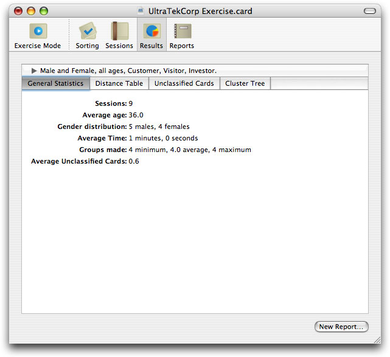
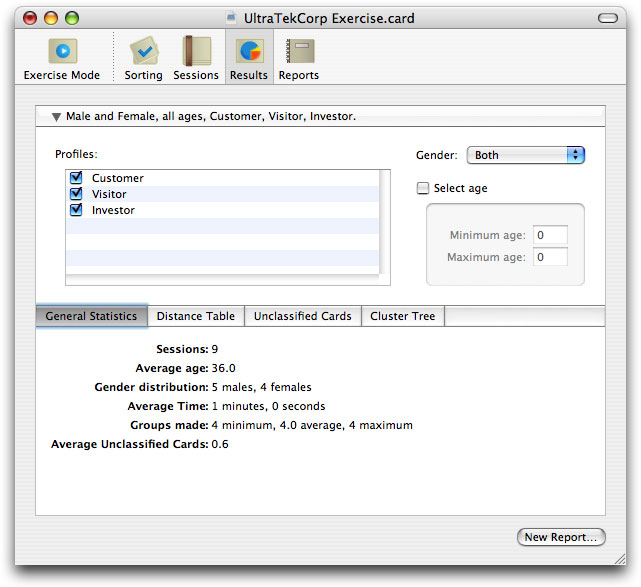
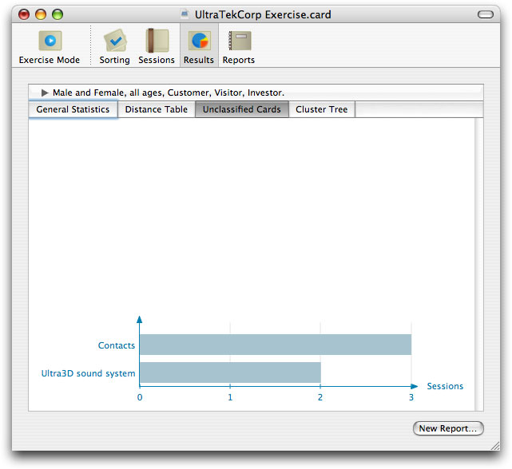
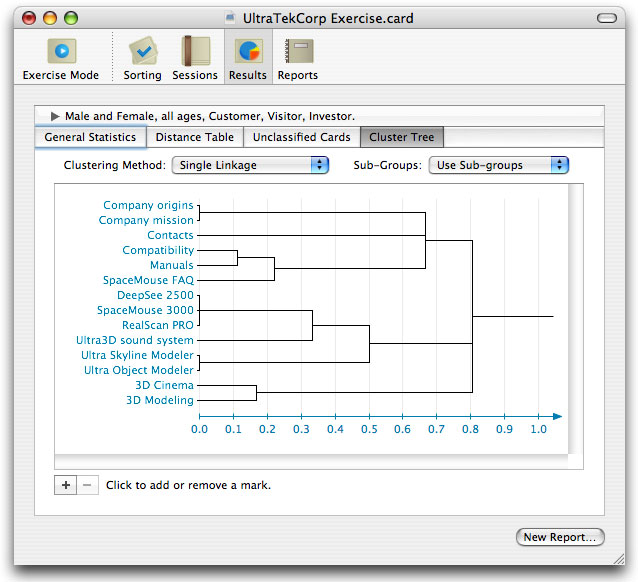
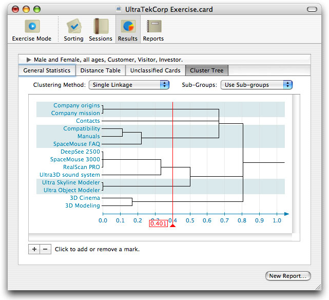
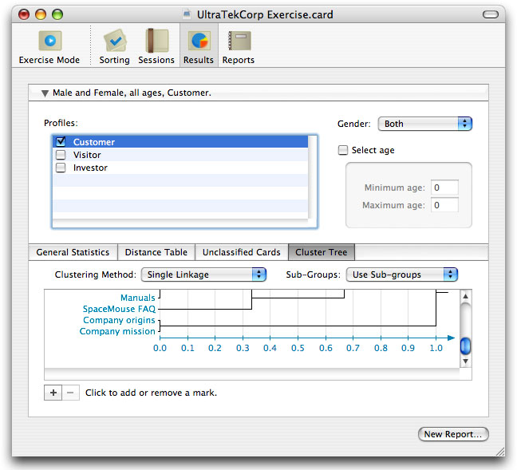
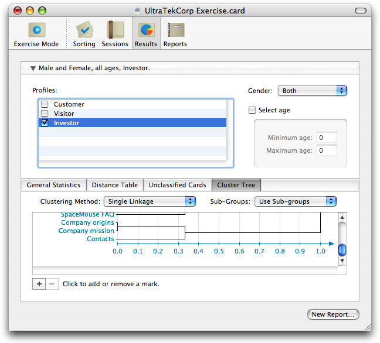
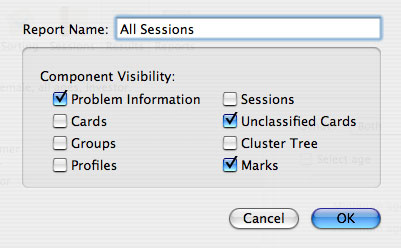
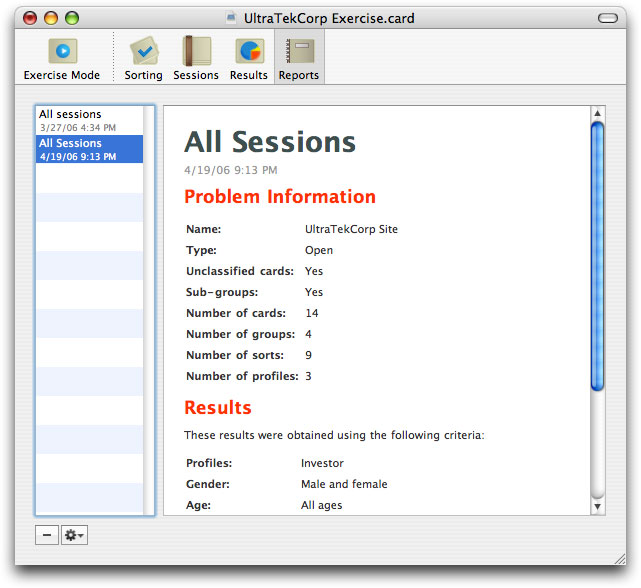

xSort allows the user to analyze the results obtained from the saved sessions, and to automatically build printable reports based on those analysis.
The results of a xSort document can be seen simply by pressing the Results button on the toolbar, or choosing Results from the Exercise menu.
As you may see, there are four tabs that present several kinds of data you may analyze:
Also, it’s possible to select only some sessions, depending on the criteria used. To select criteria, click on the criteria button, right above the four result tabs. The criteria selection zone shows up, similar to the following image.
Here, you may select the sessions you want to analyze. The results on the four tabs described above will reflect the sessions that match the criteria defined on the criteria selection zone.
On the Profiles zone, you may select the profiles you want to include. The Gender pop-up menu allows you to choose one or both genders. FInally, you may select an age interval by clicking on the “Select Age” checkbox.
After selecting the criteria, click on the criteria button again, to make the criteria selection zone hide itself.
To understand how to analyze data on xSort, let’s use the provided document (UltraTekCorp Site) as an example.
Let’s start by analyzing the results provided by all the sessions.
1. If necessary, open UltraTekCorp Exercise document provided in the xSort disk image.
2. Click on the Results button on the toolbar, OR choose Results from the Exercise menu.
3. Click on the criteria button (the one named "Men and Women, all ages, ...") to show the criteria selection zone.
4. Make sure all the profiles are selected, the Gender pop-up menu is set to Both and the Select Age checkbox is NOT checked.
5. Click again on the criteria button to hide the criteria selection zone.
6. Select the Unclassified Cards tab.
Looking at the graph, it's easy to tell that the Contacts card was not classified in three sessions.
7. Select the Cluster Tree Tab.
8. On the Clustering Method pop-up menu, select Single Linkage.
The cluster tree shows the normalized distance between cards. When the distance is short, it means the cards were classified almost always on the same group. For example, you may see that the distance between Company origins and Company mission cards is zero. That means the cards were always classified on the same group.
9. Click on the “+” button to add a mark.
10. Drag the mark to the 0.4 distance. You may press the Shift key while dragging so that the cursor is pulled to multiples of 0.1.
The mark crossed six horizontal lines. This means that, if you choose the 0.4 distance as a reference, you will obtain six groups of cards. The first one is Company mission and Company origins; the second one is Contacts; etc. You may also identify the groups formed by the mark using the blue and white color zones.
It's interesting to note that the Contacts card is alone in a group. This means that there was a lot of indecision on the participants minds about where to put that card. Let’s try to figure out what has motivated that indecision.
11. Click the criteria button to show the criteria selection zone again. Deselect the Visitor and Investor profiles.
You may now see that, for the Customers, the distance between Contacts and Compatibility, Manuals is zero.
12. Go back to the criteria selection zone. This time, select only Investor.
Notice than the distance between Contacts and Company Mission, Company Origins is now between 0.3 and 0.4, and the distance between Contacts and all other cards is 1.0.
This means that customers usually look for the contacts page on the Support group (the one that clearly contains the manuals, the SpaceMouse FAQ and the Compatibility information). On the other hand, investors look for the contacts page on the institutional information group (the one that contains the company origins and mission). So, this presents a challenge you must solve when designing UltraTekCorp web site. Probably you should put a link to the contacts page both on the company and support pages.
The single linkage, average linkage and complete linkage options are related to the way the cluster tree is calculated. Sometimes a method provides more useful information that another. With time, you should acquire enough experience to know what method use for each situation.
The Sub-Groups menu allows you to choose between using the sub-groups information, or flattening all the sub-groups in first level groups. Considering the sub-group information should give you more accurate results.
xSort data analysis tries to extract important information from the sessions previously made. Sometimes you may think that information is not enough, or you may prefer to run your own data analysis algorithms.
To export the distance table in CSV format:
1. Make sure all the selection criteria are set as you want.
2. Choose Distance Table To CSV... from the Export sub-menu in the File menu.
3. Use the Mac OS X save panel to choose the location and the file name for the CSV file.
You may choose between the “txt” and “csv” extensions. Some programs prefer to open files that end with “.csv”, others prefer “.txt”. The file content is the same in both situations.
Also, you may choose the regular or Microsoft Excel CSV format. The regular format uses a dot (.) as the decimal separator and a comma (,) as the values separator. The Excel format depends on the localization system settings of your mac. If the dot is used on your country as the decimal separator, Excel will work with regular CSV files. If the comma is used, Excel uses the comma as the decimal separator and a semicolon (;) as the value separator. Choose the option more appropriate for your needs.
A report is a printable document generated by xSort that contains information related to the card sorting exercise and the results analysis made by the user.
A report is immutable, in the sense that you may not change any information contained on it. You may, however, show and hide parts of the report whenever you like.
You may create a report, and then change the problem settings, perform new sessions and obtain new results. The report will stay saved inside your card sorting document, with all of the original data. This way, you may compare the results of older versions of your exercise with newer ones.
To create a report:
1. Follow the steps 1 to 10 described on the Results section.
2. Click on the New Report button, on the bottom of the window.
3. On the sheet that drops from the window title bar, type "All sessions" on the report name field.
4. Click OK.
You have now created a report with all the data of your exercise. Note that a report has eight distinct parts. As you may see on the image, we selected three of them to show up. You may change this setting later.
To browse the created reports:
1. Click on the Reports button on the toolbar, or choose Reports from the Exercise menu.
2. On the list on the left, click on the report we just created.
The report will be displayed on the view on the right.
Scroll down to the Marks component of the report. Notice that the mark you placed is listed there, with the criteria you used, and the groups formed by that mark.
Note that you should not follow this results strictly when applying the results to your work. The card sorting technique only allows you to find patterns on the sessions made. It doesn’t tell you directly how you should organize your information. That’s up to you to decide, based on the information xSort gives you.
To change the name of a report:
1. Click on the Reports button on the toolbar, OR choose Reports from the Exercise menu.
2. Double-click on the name of the report you want to change. Type the new name, and press Return.
To change the visibility of a report component:
1. Click on the Reports button on the toolbar, OR choose Reports from the Exercise menu.
2. On the list on the left, click on the report you want to modify.
3. On the actions pop-up menu, choose Settings.
The actions pop-up menu is achieved by clicking on the button with a gear icon, on the bottom left of the window.
4. Change the visibility of the desired components.
To print a report:
1. Click on the Reports button on the toolbar, OR choose Reports from the Exercise menu.
2. On the list on the left, click on the report you want to print.
3. Choose Print from the File menu.
To remove a report:
1. Click on the Reports button on the toolbar, OR choose Reports from the Exercise menu.
2. On the list on the left, click on the report you want to remove.
3. Click on the "-" button.
To export a report in HTML:
1. Click on the Reports button on the toolbar, OR choose Reports from the Exercise menu.
2. On the list on the left, click on the report you want to export.
3. Choose Report to HTML... from the Export sub-menu in the Export menu.
4. Choose a name and a folder to save the report.
A new folder will be created with the given name with all the needed HTML and graphic files. To read the report, double-click the index.html file in the created folder, or open it in Safari.